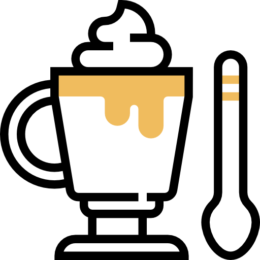
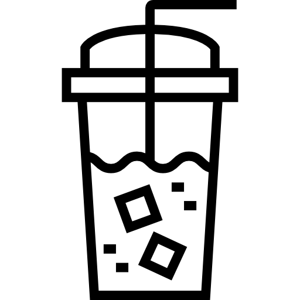

Mocaccino
Un café moca es una variante del café con leche. Como este, suele llevar un tercio de expreso y dos tercios de leche vaporizada, pero se añade una parte de chocolate, normalmente en forma de jarabe de chocolate, aunque algunas máquinas usan chocolate en polvo instantáneo.
Capuchino
Un capuchino contiene expreso, vapor y espuma de leche a partes iguales. La taza de un capuchino es más pequeña que la taza del café latte, generalmente de 150 a 180 ml. El tamaño de la taza es muy importante para conseguir el equilibrio perfecto entre el sabor del expreso y la cantidad exacta de leche.
Cortado
un café espresso con una pequeña cantidad de leche, normalmente caliente, para quitarle el amargor al café, aunque en algunos lugares se le denomina cortado con leche para diferenciarlo del "cortado con agua", que consiste en un café expreso con más espuma ...
Cafe frio
El café frío puede ser hecho de muchas maneras según se desee. Puede ser preparado incluyendo cubos de hielo en un vaso con café caliente, o previamente se puede enfriarlo sin la ayuda de los mismos
